Full-funnel Meta advertising strategy for Australia's #1 functional mushroom brand. Five hero products. One unstoppable growth engine.
Audience segmentation, competitive landscape, and strategic positioning
Male, 25–40, urban professional, HHI $80k–$150k+. Tech-savvy, early adopter. Follows Andrew Huberman, Dave Asprey, Peter Attia.
Obsessed with optimising performance. Stacks supplements strategically. Views body as a system to upgrade. Data-driven purchasing decisions.
Brain fog during deep work. Afternoon energy crashes. Wants edge without pharmaceuticals. Skeptical of brands without science backing.
Sustained mental clarity. Clean, jitter-free energy. Products that compound over time. Brand they can trust and geek out on.
Female, 28–45, health-aware, mid-to-high income. Yoga/pilates practitioner. Follows wellness influencers on Instagram. Shops at farmers' markets.
Values natural, clean-label products. Prefers holistic over synthetic. Community-oriented. Will research ingredients before purchasing.
Stress and overwhelm from juggling career/family. Poor sleep quality. Wants to age well without harsh chemicals. Struggles to find trustworthy brands.
Inner calm and balance. Glowing health from the inside out. Rituals that feel nourishing, not clinical. Products that align with values.
Male/Female, 22–38, gym-goer or endurance athlete. Spends $150+/mo on supplements. Follows fitness creators. Competitive nature.
Performance is identity. Always chasing PRs. Open to natural ergogenic aids. Wants clean labels they can trust in competition.
Recovery takes too long. Pre-workouts are jittery and crash-prone. Wants sustained energy without synthetic stimulants. Plateau frustration.
Natural energy that doesn't spike and crash. Faster recovery. Endurance gains. A supplement stack that actually works and is competition-safe.
Male/Female, 40–60, established professional or retiree. HHI $100k+. Reads longevity research. May already take NMN/NAD+ or resveratrol.
Proactive about aging. Willing to invest in premium health. Trusts science and clinical backing. Values TGA listings and third-party testing.
Declining energy and cognitive sharpness. Concerned about age-related cellular decline. Current NAD+ supplements are expensive capsules with poor absorption.
Reverse the clock at a cellular level. Stay sharp, vital, and energised into their 60s and beyond. Premium products that deliver real results.
Male/Female, 22–35. Heard about functional mushrooms on a podcast or TikTok. First-time buyer. Mid income. Open-minded but skeptical.
Wellness-curious but not deep in the space. Influenced by social proof and UGC. Price-sensitive on first purchase. Needs education before converting.
Overwhelmed by options. Doesn't know which mushroom does what. Worried about taste or weird side effects. Needs reassurance from real people.
Simple entry point into functional mushrooms. Clear guidance on what to try first. Low-risk way to test. Social proof and transparent ingredient info.
Male/Female, 30–50, corporate or startup founder. Works 50+ hours/week. HHI $100k+. Drinks 3+ coffees daily. Time-poor but health-aware.
Performance-driven but burning out. Knows they need to manage stress but won't slow down. Wants solutions that integrate into existing routine, not add complexity.
Chronic stress, poor sleep, cognitive fatigue. Coffee dependency. Can't switch off at night. Needs something that works fast and fits into a busy schedule.
Mental clarity without more caffeine. Ability to wind down at night. Sustainable energy through long days. Simple daily ritual — drop, stir, go.
| Brand | Format | Price Range | Strengths | Weaknesses | Threat Level |
|---|---|---|---|---|---|
| SuperFeast | Powder | $44–$70 | Cult following, Di Dao sourcing, Byron Bay brand story | No liquid extracts, higher price, limited innovation | Medium |
| Teelixir | Powder | $40–$67 | Certified organic, accessible price, wide range | Less brand recognition, no liquid format | Medium |
| Four Sigmatic | Coffee blends | $30–$55 | Convenience, global brand, mushroom coffee format | Not AU-focused, lower potency blends | Low |
| Real Mushrooms | Capsules | $40–$65 | 100% fruiting body, science-backed, <2% starch | North American focus, no AU presence | Low |
| DIRTEA | Powder | $50–$80 | Strong influencer marketing, premium packaging | UK-based, limited AU traction | Low |
Double-extraction process delivers superior bioavailability vs. powders. Less than 1.5% starch vs. 20–70% in competitor powders. Drop it in your coffee and go.
Uniquely Australian ingredient — one of nature's richest vitamin C sources. No competitor offers this. A powerful differentiator in ad creative.
Regulatory credibility competitors can't match. Manufactured in licensed AU facilities. Third-party tested every batch. Trust signals that convert.
Account structure, naming conventions, targeting strategy, and operational management
Naming Convention: [Objective]_[Product]_[Funnel Stage]_[Audience]_[Date]
How we distribute $20,000/month across products, funnel stages, and testing — with clear decision thresholds
| Product | % of Budget | Monthly $ | Daily $ | Rationale |
|---|---|---|---|---|
| Lion's Mane | 30% | $6,000 | $200 | Hero product, largest review base (1,754), broadest audience appeal, highest search volume |
| Cordyceps | 20% | $4,000 | $133 | Strong fitness angle, clear USP (energy/pre-workout), 4.9★ with 461 reviews |
| Shilajit | 20% | $4,000 | $133 | Premium price ($92) = higher AOV, trending category, strong male skew for targeting |
| Reishi | 15% | $3,000 | $100 | Sleep/stress is massive market, complements Lion's Mane for stack upsell |
| Liposomal NR+ | 15% | $3,000 | $100 | Premium product ($74.95), niche but high-intent longevity audience, TGA-listed |
| Funnel Stage | % of Product Budget | Purpose |
|---|---|---|
| TOF — Prospecting | 60% | Net-new customer acquisition via broad + interest targeting |
| MOF — Retargeting | 20% | Re-engage warm audiences — site visitors, video viewers, engagers |
| BOF — Retention | 10% | Cross-sell and winback past customers |
| Testing Reserve | 10% | New creative and audience tests — rotated weekly |
Trigger when ALL conditions met for 3+ consecutive days:
Action: Increase daily budget by 20% max. Never more than once every 3 days. Monitor for 48hrs post-increase.
When performance is acceptable but not scalable:
Action: Test new creative variants. Adjust audience if frequency rising. Do not increase budget. Review in 5 days.
Trigger when ANY condition met after learning phase:
Action: Pause ad set immediately. Diagnose: is it creative fatigue, audience saturation, or landing page issue? Reallocate budget to winners.
A repeatable system for testing, iterating, and scaling creative — not a list of ideas
We test one variable at a time in this priority order. Each variable is tested across 2–3 variants with all other elements held constant.
| Priority | Variable | What We're Testing | Min. Spend Before Decision |
|---|---|---|---|
| 1st | Hook / Opening | First 3 seconds of video or headline of static | $50 per variant |
| 2nd | Creative Angle | The core message/positioning (e.g., energy vs. focus vs. ritual) | $75 per variant |
| 3rd | Format | Static vs. video vs. carousel vs. UGC | $75 per variant |
| 4th | Visual Style | Lifestyle vs. product-hero vs. ingredient close-up vs. testimonial | $50 per variant |
| 5th | Copy Length | Short (2 lines) vs. medium (paragraph) vs. long (story format) | $50 per variant |
| 6th | CTA | Shop Now vs. Learn More vs. Get Yours vs. Try Risk-Free | $40 per variant |
| Metric | Good | Kill |
|---|---|---|
| CTR (link) | ≥ 1.5% | < 0.8% |
| Hook Rate (video) | ≥ 30% | < 15% |
| Thumb-Stop Ratio | ≥ 25% | < 12% |
| CPM | < $25 | > $45 |
| Metric | Good | Kill |
|---|---|---|
| ROAS | ≥ 2.5x | < 1.5x |
| CPA | ≤ $35 | > $55 |
| ATC Rate | ≥ 5% | < 2% |
| Purchase Rate | ≥ 2% | < 0.5% |
| Product | New Statics/wk | New Videos/wk | Monthly Total |
|---|---|---|---|
| Lion's Mane | 2–3 | 1–2 | 12–20 |
| Cordyceps | 2 | 1 | 12 |
| Shilajit | 2 | 1 | 12 |
| Reishi | 1–2 | 1 | 8–12 |
| Liposomal NR+ | 1–2 | 1 | 8–12 |
| Total Monthly | 52–68 new creatives | ||
Every test result is logged in a shared Google Sheet with these fields:
This playbook becomes the strategic asset. Over time, it reveals exactly which angles, hooks, and formats resonate for each product and audience — eliminating guesswork.
The complete Day 1 ad set across all 5 products — every static and video concept we'd launch
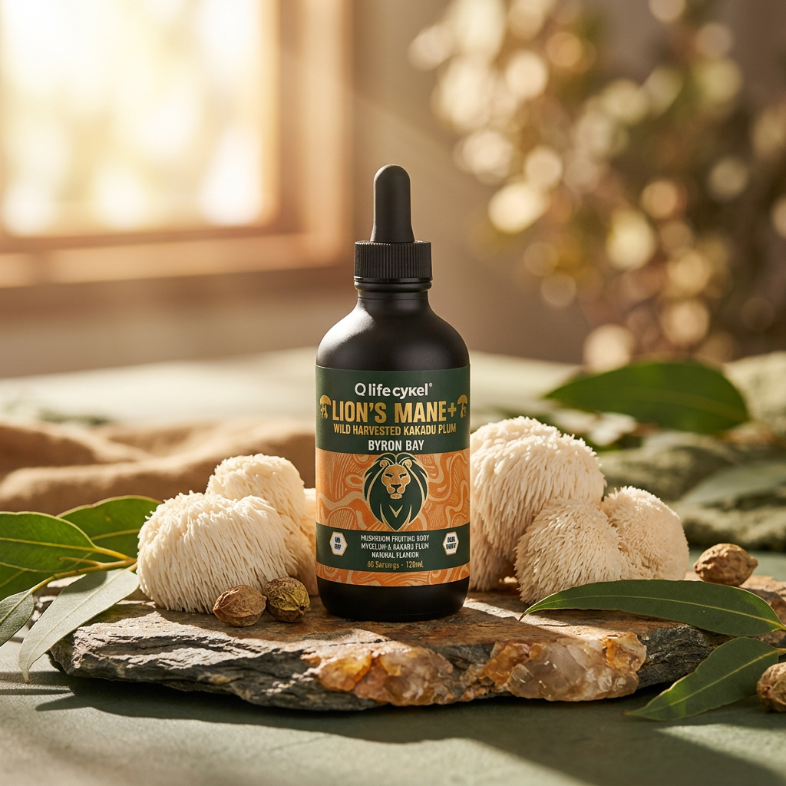
Visual Direction: Split-screen — left side: cluttered desk, foggy morning coffee, unfocused eyes. Right side: clean workspace, Lifecykel Lion's Mane bottle hero-lit, sharp focus. Warm natural lighting, earthy tones. Kakadu Plum callout badge in corner.
Hook: "Your brain is running on 60%. Here's the missing 40%."
Messaging Strategy: Targets the biohacker and stressed professional. Positions Lion's Mane as the daily upgrade they didn't know they needed. Leans into the "before/after" clarity transformation.
Target Audience: Segments 1 (Biohacker), 6 (Stressed Professional)
Hook (0–3s): Close-up of dropper releasing golden liquid extract into steaming coffee. ASMR-style audio. Text overlay: "The 5-second upgrade that changed my mornings."
Script Outline:
0–3s: Dropper into coffee close-up
3–7s: Person takes first sip, closes eyes, smiles — cut to them crushing work at desk
7–12s: Product hero shot with Kakadu Plum callout + "Australia's #1 Lion's Mane"
12–15s: End card — "Drop. Stir. Focus." + Shop Now CTA
Visual Direction: Warm morning light, cozy kitchen setting, organic textures. Person is relatable (not model-perfect). Earthy colour grading matching Lifecykel brand.
Target Audience: Segments 2 (Wellness Woman), 5 (Curious Newcomer), 6 (Stressed Professional)
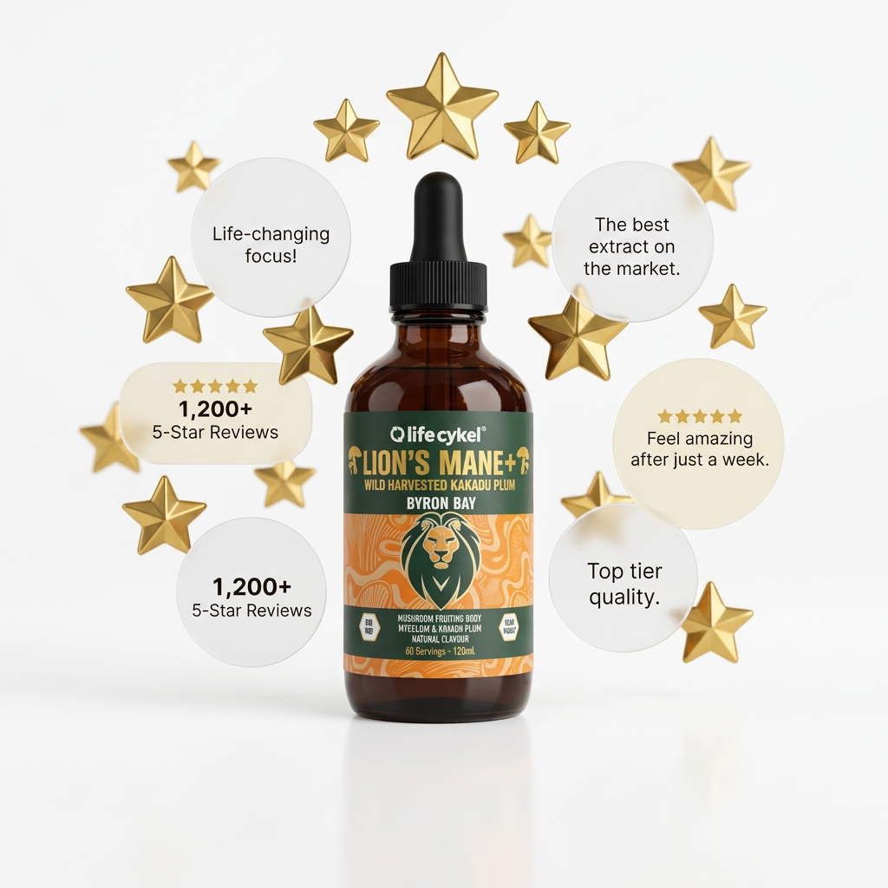
Visual Direction: Clean white background. Product centred. Surrounded by floating 5-star review snippets — real customer quotes. Large "4.8★" rating prominent. "TGA Listed" and "Made in Australia" trust badges at bottom.
Hook: "1,754 Australians already know. Do you?"
Messaging Strategy: Pure social proof play for the skeptical newcomer. Removes purchase anxiety by showing volume of happy customers. Low-risk, high-trust entry point.
Target Audience: Segment 5 (Curious Newcomer)
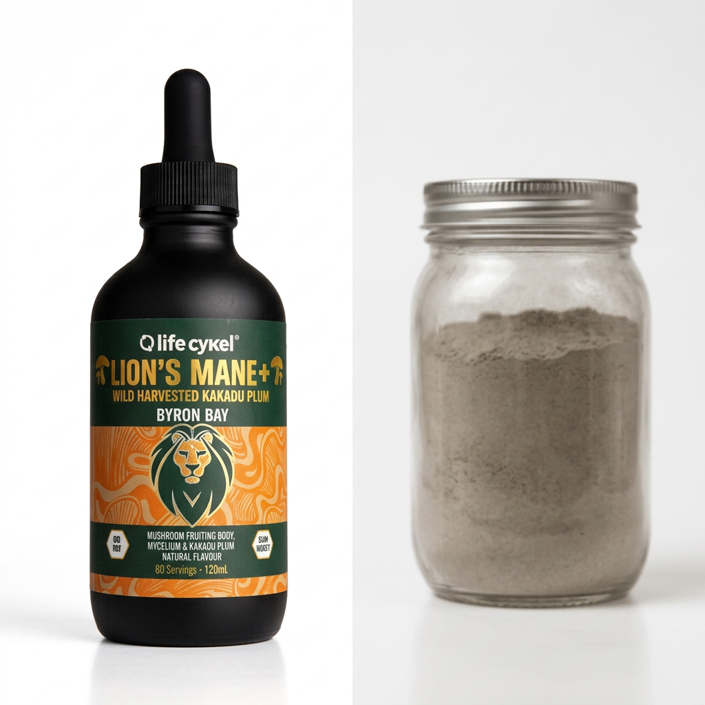
Visual Direction: Side-by-side comparison graphic. Left: generic mushroom powder jar with "20–70% starch filler" callout. Right: Lifecykel liquid extract bottle with "Less than 1.5% starch. Double-extracted. Kakadu Plum infused." Clean infographic style.
Hook: "Your mushroom powder is mostly starch. Ours isn't."
Messaging Strategy: Directly educates the audience already in the mushroom category but buying competitor powder products. Converts them by showing Lifecykel's objective superiority in bioavailability and purity.
Target Audience: Segments 1 (Biohacker), 4 (Longevity Seeker)
Hook (0–3s): Macro shot of mushroom fruiting body growing in timelapse. Text: "This mushroom rewires your brain. Here's how."
Script Outline:
0–3s: Mushroom timelapse growth, curiosity hook
3–10s: Quick animated explainer — Lion's Mane stimulates NGF (Nerve Growth Factor), supports neuroplasticity
10–18s: Double-extraction process visualised — "We extract what powders can't"
18–24s: Customer testimonial overlay — "I felt the difference in week two"
24–30s: Product hero + "TGA Listed. Australian Made." + CTA
Visual Direction: Documentary-style mixed with motion graphics. Nature footage + lab/science aesthetic. Green and gold colour palette.
Target Audience: Segments 1 (Biohacker), 4 (Longevity Seeker)
Visual Direction: Lifestyle flat-lay — Lion's Mane bottle alongside daily items (coffee, journal, phone). Price breakdown overlaid: "$34.95 ÷ 30 days = $1.17/day for laser focus." Aspirational but accessible. Warm, Instagram-worthy styling.
Hook: "Sharper focus than your $7 coffee. For $1.17 a day."
Messaging Strategy: Overcomes the price objection by reframing daily cost vs. daily coffee. Makes the product feel like a no-brainer investment for the price-conscious newcomer.
Target Audience: Segments 5 (Curious Newcomer), 6 (Stressed Professional)
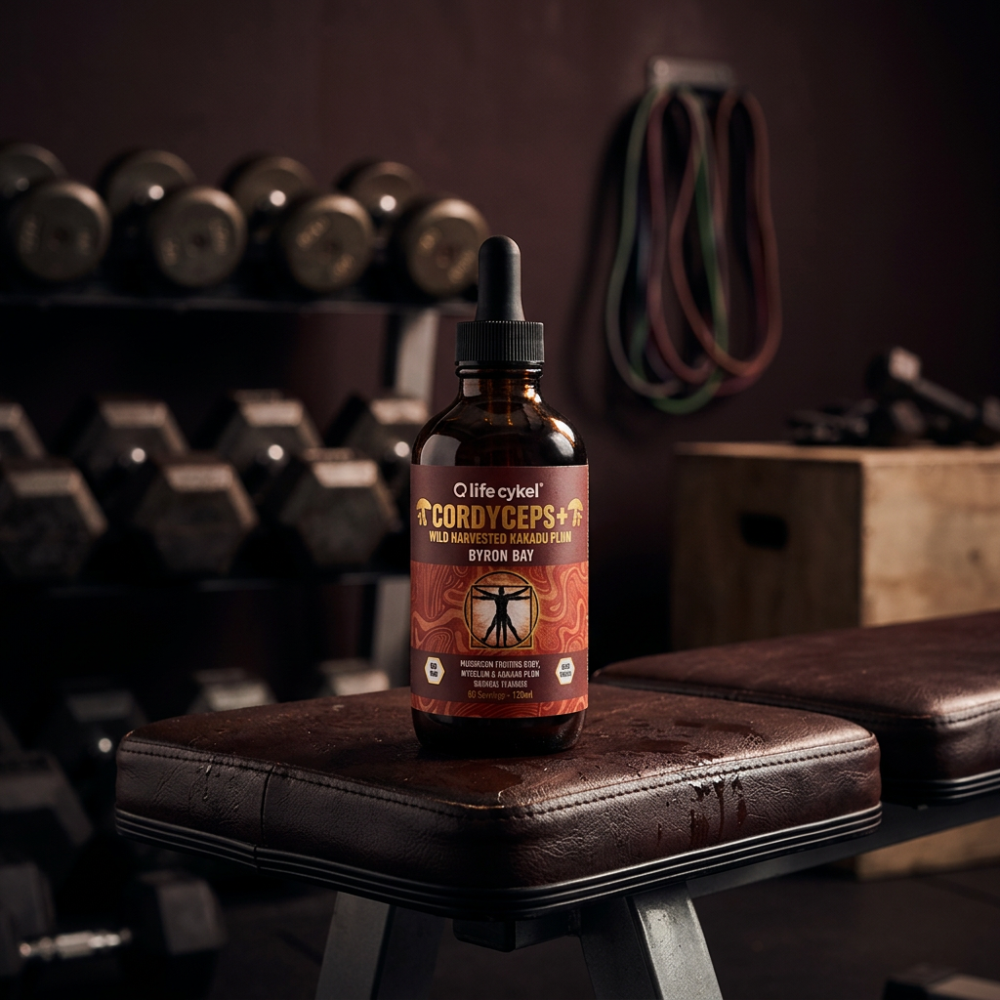
Visual Direction: Bold, high-energy. Cordyceps bottle front-and-centre with gym/outdoor backdrop. Crossed-out synthetic pre-workout tub in background. Text overlay: "No jitters. No crash. Just go." Punchy, athletic aesthetic.
Hook: "Your pre-workout is lying to you."
Messaging Strategy: Targets active performers fed up with synthetic stimulant crashes. Positions Cordyceps as the clean, natural alternative that serious athletes trust.
Target Audience: Segment 3 (Active Performer)
Hook (0–3s): Alarm at 5:00 AM. Hand reaches for Cordyceps bottle instead of phone. Text: "The activation mushroom."
Script Outline:
0–3s: 5AM alarm, reach for Cordyceps
3–7s: Drop into water, quick stretch, lacing up shoes
7–12s: Running/cycling/gym montage — energetic, powerful
12–15s: Product shot — "Switched on. Energised. Ready." + Shop Now
Visual Direction: Pre-dawn blue tones transitioning to golden sunrise. High-energy editing pace. Athletic, aspirational but attainable.
Target Audience: Segments 3 (Active Performer), 6 (Stressed Professional)
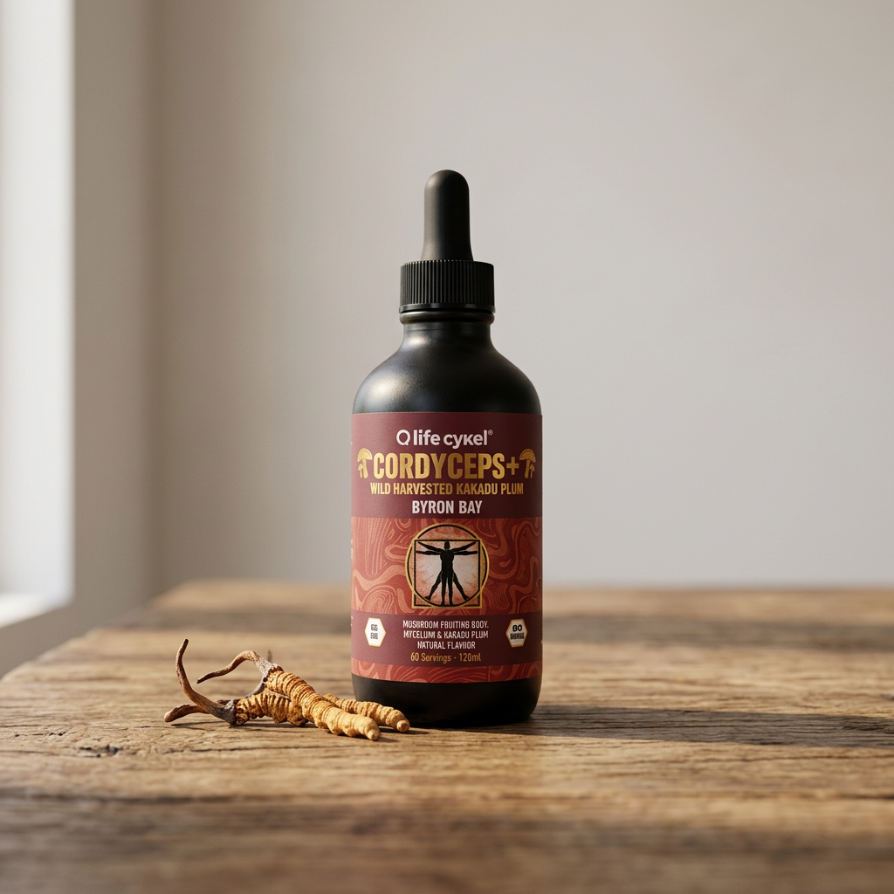
Visual Direction: Product hero on natural wood surface with morning light. Clean typography: "CORDYCEPS — The Activation Mushroom." Benefit bullets as elegant text: Energy. Stamina. Endurance. Kakadu Plum badge and 4.9★ rating.
Hook: "Some mushrooms calm you down. This one fires you up."
Target Audience: Segments 1 (Biohacker), 3 (Active Performer), 5 (Curious Newcomer)
Hook (0–3s): Text on screen: "We asked 461 reviewers one question..." then cut to rapid-fire review screenshots scrolling.
Script Outline:
0–3s: Hook question
3–15s: Scrolling real review snippets — "game changer," "replaced my pre-workout," "feel incredible"
15–22s: Product reveal — dropper into smoothie, energetic person working out
22–30s: "4.9★ from 461 Australians. Try it risk-free." + CTA
Target Audience: Segment 5 (Curious Newcomer)
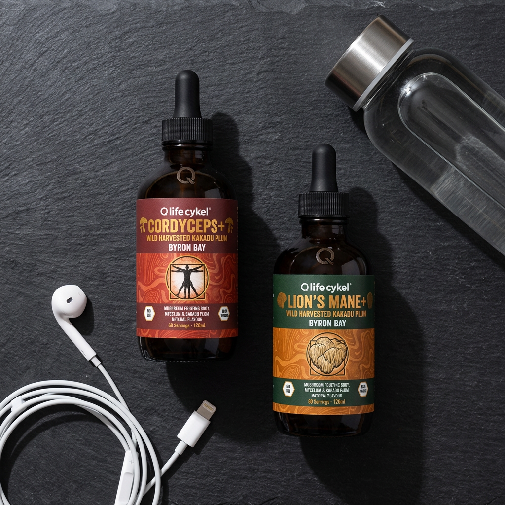
Visual Direction: Flat-lay showing Cordyceps + Lion's Mane together on a workout bench or desk. "The Focus + Energy Stack." Visual flow chart: AM → Cordyceps (energy) → PM → Lion's Mane (focus). Clean, instructional but aspirational.
Hook: "Pair these two and watch what happens to your week."
Target Audience: Segments 1 (Biohacker), 3 (Active Performer)
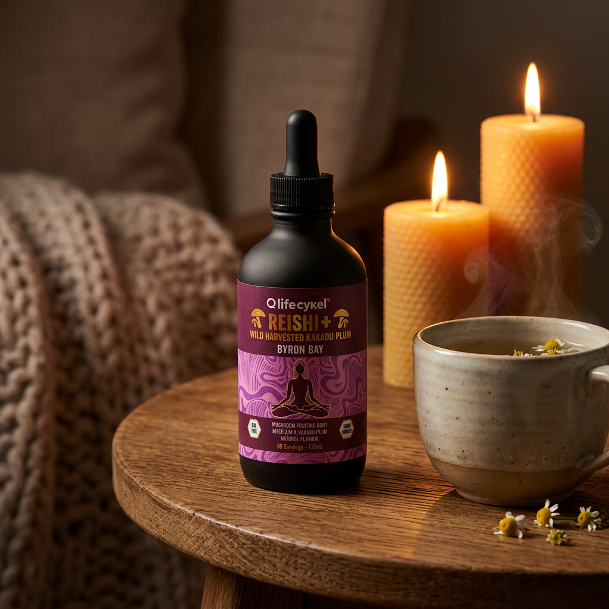
Visual Direction: Moody, warm evening scene. Person on couch with tea, Reishi bottle nearby. Soft ambient lighting, candles. Text overlay: "Your nervous system called. It wants a break." Muted earth tones, cozy aesthetic.
Hook: "You don't need another glass of wine. You need this."
Messaging Strategy: Positions Reishi as the healthy alternative to alcohol for stress relief. Targets the overwhelmed professional who reaches for wine at 7pm. Provocative but empathetic hook.
Target Audience: Segments 2 (Wellness Woman), 6 (Stressed Professional)
Hook (0–3s): Overhead shot of chamomile tea being made. Reishi dropper enters frame. Text: "The Zen Mushroom. For people who forgot how to sleep."
Script Outline:
0–3s: Tea + Reishi dropper (satisfying ASMR sound)
3–7s: Person reading in bed, eyes getting heavy
7–12s: Deep, peaceful sleep shot. Alarm goes off — they wake refreshed, stretching
12–15s: "Deep sleep. Every night. Naturally." Product shot + CTA
Target Audience: Segments 2 (Wellness Woman), 6 (Stressed Professional)
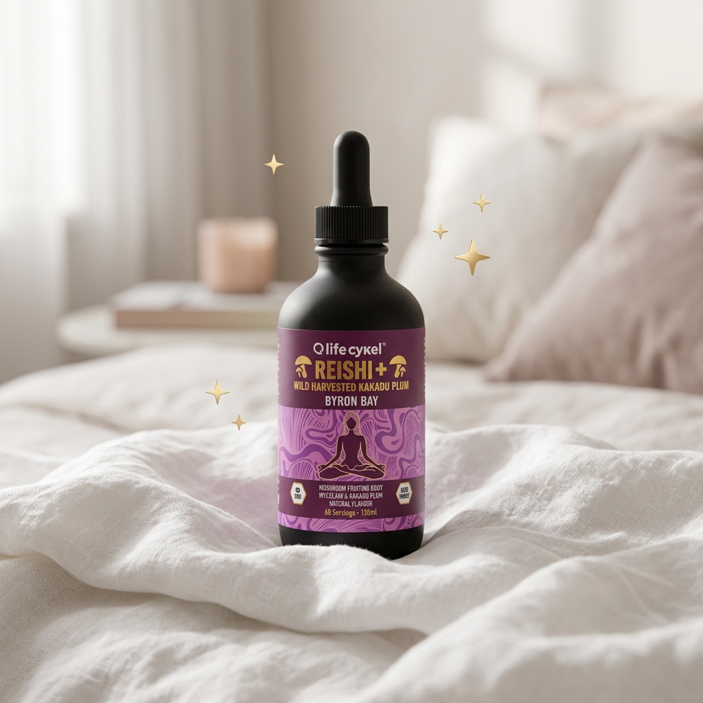
Visual Direction: Dreamy, soft-focus background (bedroom scene). Product hero with "4.9★ from 523 reviews" prominent. Three customer quote callouts about improved sleep. Peaceful colour palette — deep greens, warm golds.
Hook: "523 Australians finally sleep through the night. Here's their secret."
Target Audience: Segments 5 (Curious Newcomer), 2 (Wellness Woman)
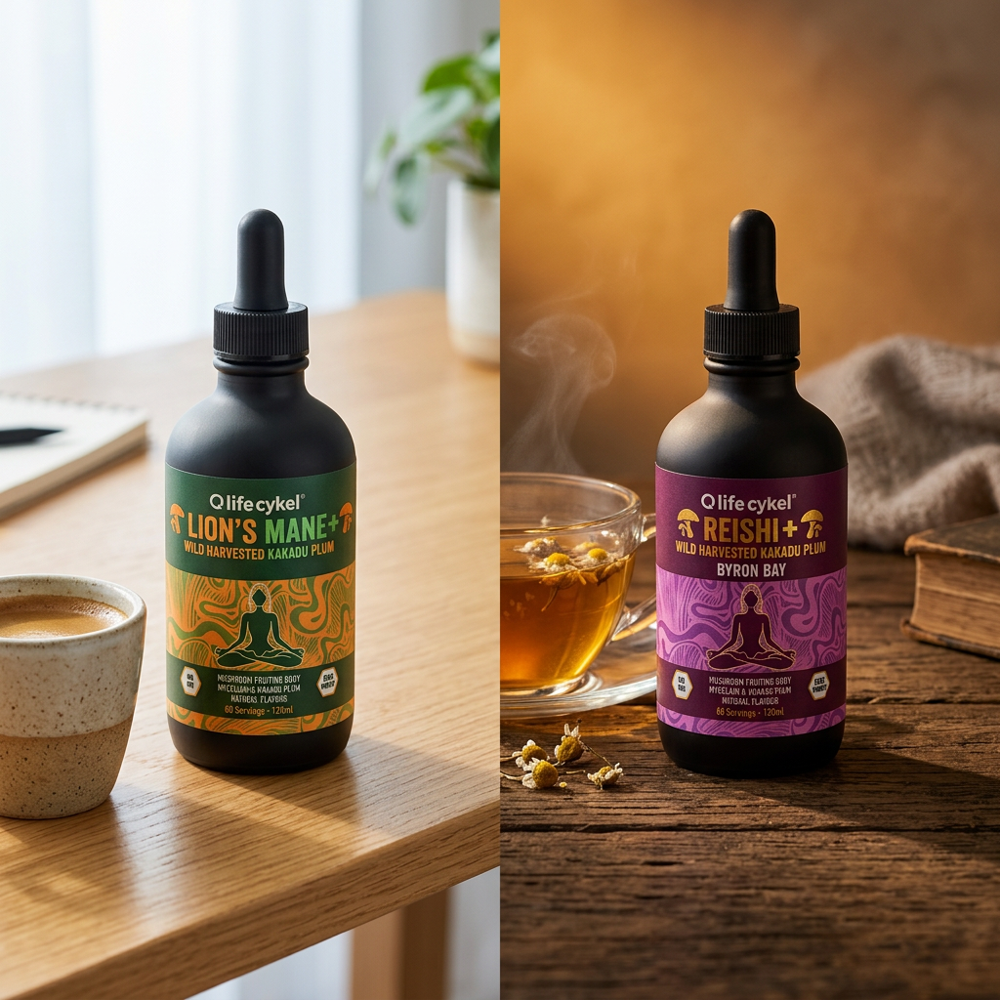
Visual Direction: Two-panel image. Left panel (bright, morning light): Lion's Mane + coffee. Right panel (warm, evening glow): Reishi + tea. "The 24-Hour Mushroom Stack." Clean, editorial layout with Lifecykel branding.
Hook: "Focus by day. Calm by night. Two drops. Zero compromises."
Target Audience: Segments 1 (Biohacker), 6 (Stressed Professional)
Hook (0–3s): Woman rolling up yoga mat, serene studio setting. Text: "After the practice, the real work begins."
Script Outline:
0–3s: Post-yoga scene, calm energy
3–10s: Making evening tea, adding Reishi extract. "The Zen Mushroom for your deepest calm"
10–17s: Cozy evening scenes — journaling, reading, peaceful expression
17–20s: "Reishi. Your ritual for letting go." + CTA
Target Audience: Segment 2 (Wellness Woman)
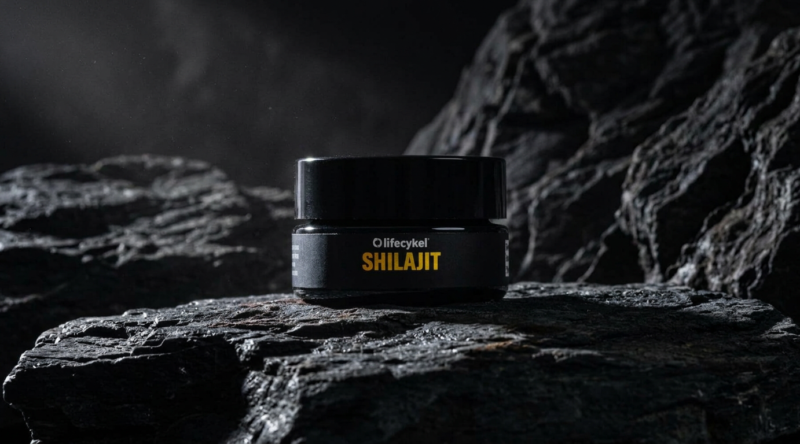
Visual Direction: Dark, bold aesthetic. Shilajit resin jar hero-lit against mountain/rock backdrop. Gold typography: "The Destroyer of Weakness." 84+ minerals callout. Fulvic acid highlight. Premium, masculine energy — think luxury supplement meets ancient wisdom.
Hook: "84 minerals. Forged in mountains. Built for men who refuse to slow down."
Target Audience: Segment 3 (Active Performer — male skew)
Hook (0–3s): Aerial drone shot of remote mountain range. Text: "Hidden in these rocks is something your body is starving for."
Script Outline:
0–3s: Mountain aerial shot, intrigue hook
3–8s: Close-up of resin seeping from rock crevice. "Wild-harvested. Pure. Unprocessed."
8–14s: Lab testing footage + "Third-party tested every batch"
14–18s: Person dissolving resin in morning coffee, confident stride out the door
18–20s: "Lifecykel Shilajit. Strength from the source." + CTA
Target Audience: Segments 1 (Biohacker), 3 (Active Performer)
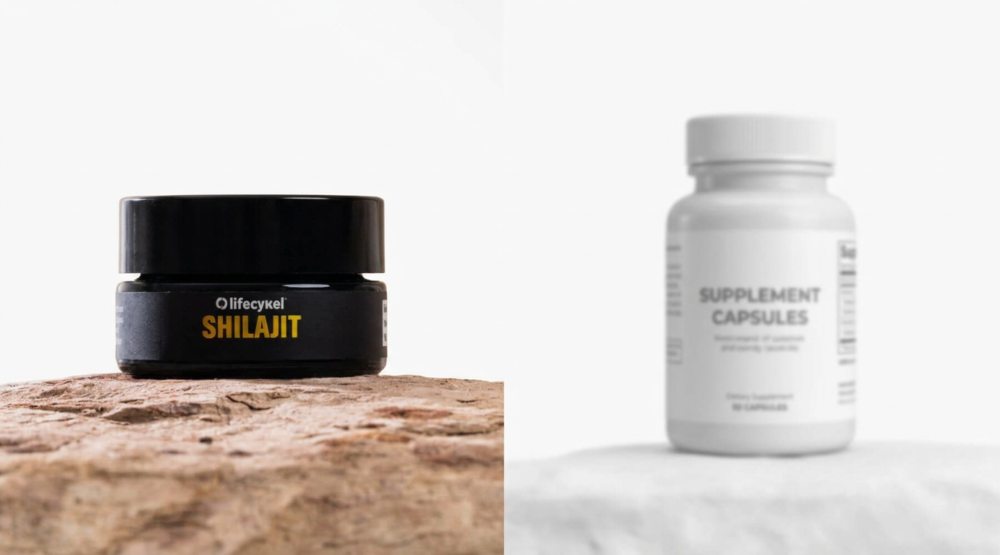
Visual Direction: Comparison infographic. Left: "Cheap Shilajit — powder form, fillers, untested, origin unknown." Right: "Lifecykel Shilajit — pure resin, wild-harvested, third-party tested, TGA facility." Check marks vs. X marks. Clean, authoritative design.
Hook: "Before you buy Shilajit, read this."
Target Audience: Segments 1 (Biohacker), 4 (Longevity Seeker)
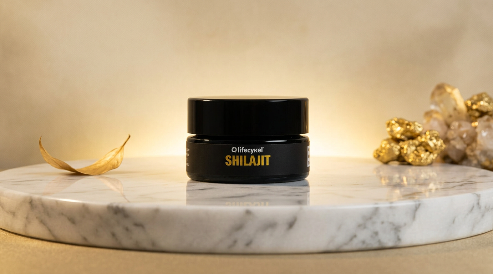
Visual Direction: Luxury product photography — Shilajit jar on marble surface, warm backlighting. "$3.07/day for 84+ minerals, fulvic acid, and unstoppable energy." Price breakdown vs. daily coffee comparison. Aspirational, premium feel.
Hook: "You spend $6 on coffee that gives you jitters. Spend $3.07 on something that actually builds you."
Target Audience: Segments 3 (Active Performer), 6 (Stressed Professional)
Hook (0–3s): Extreme close-up: tiny spoon scooping thick, dark resin from jar. ASMR texture. Text: "0.25 grams. That's all it takes."
Script Outline:
0–3s: Satisfying resin scoop close-up
3–7s: Dissolving in warm coffee — swirling, dissolving
7–12s: Man taking first sip, energised posture, walks out into morning sun
12–15s: "Shilajit Pure Resin. The Destroyer of Weakness." + CTA
Target Audience: Segments 3 (Active Performer), 5 (Curious Newcomer)
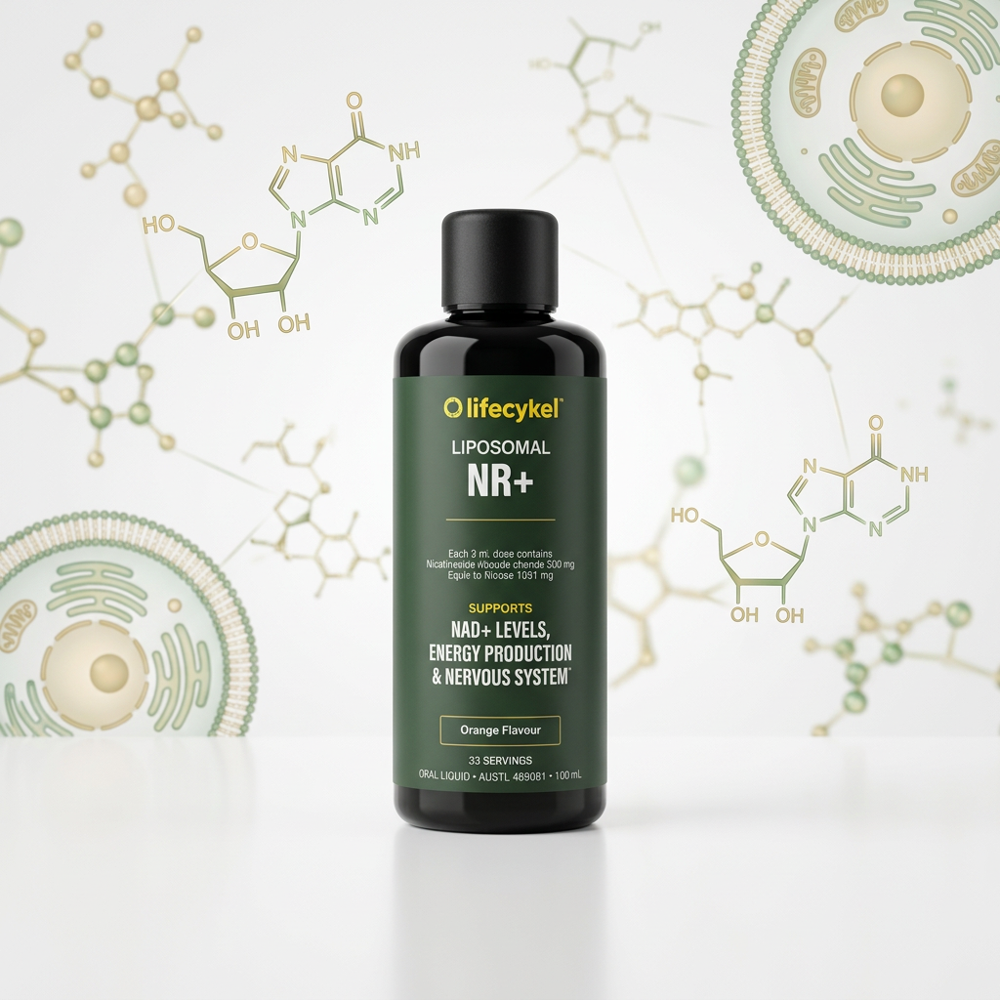
Visual Direction: Split image — microscope-style cell visualisation on one side, product bottle on the other. "NAD+ declines 50% by age 50. Liposomal NR+ replenishes it." Scientific but accessible. TGA Listed badge prominent. Clean, clinical-meets-premium aesthetic.
Hook: "After 30, your cells start running out of fuel. Here's how to refill the tank."
Target Audience: Segment 4 (Longevity Seeker)
Hook (0–3s): Text on screen: "What if you could recharge every cell in your body?" Animated cell graphic pulsing with energy.
Script Outline:
0–3s: Curiosity hook + cell animation
3–12s: Motion graphic explaining NAD+ — "It powers 500+ metabolic reactions. But it declines with age."
12–20s: "Liposomal NR+ is a direct precursor to NAD+. Liposomal delivery means 10x better absorption than capsules."
20–26s: Real person — "I have energy I haven't felt in years"
26–30s: "TGA Listed. Australian Made. Try risk-free." + CTA
Target Audience: Segments 1 (Biohacker), 4 (Longevity Seeker)
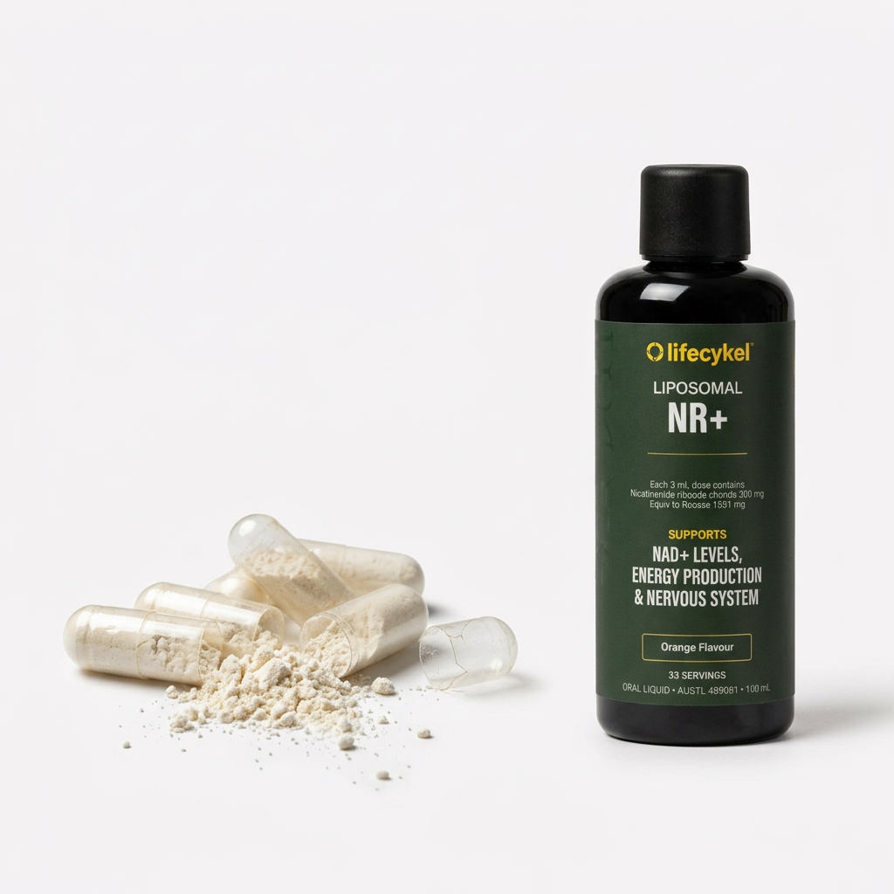
Visual Direction: Comparison graphic — capsules crumbling in stomach acid on left ("Most NAD+ supplements: destroyed in digestion"). Liposomal bubble protecting NR+ molecule on right ("Lifecykel: protected delivery straight to your cells"). Visual metaphor for bioavailability.
Hook: "You're flushing your NAD+ supplement down the toilet. Literally."
Target Audience: Segments 1 (Biohacker), 4 (Longevity Seeker)
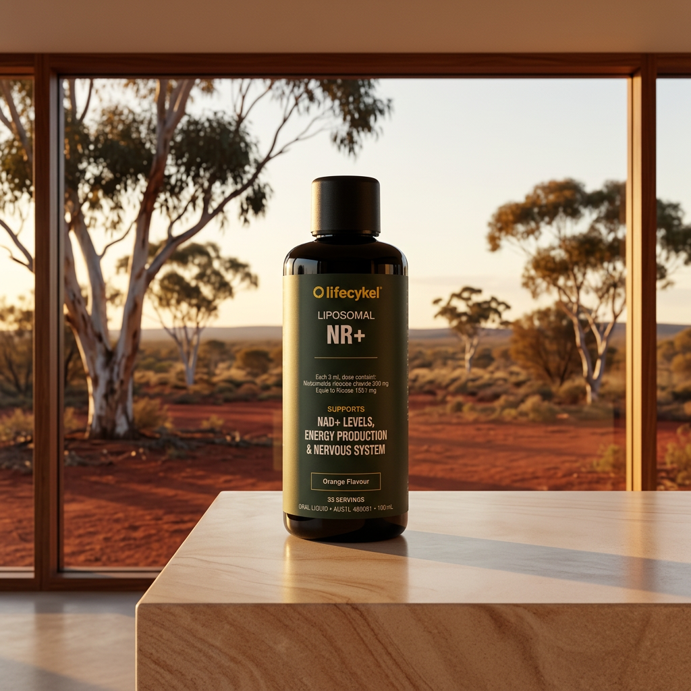
Visual Direction: Clean, authoritative design. Large TGA logo and AUST L number. Product bottle with "Manufactured in a licensed Australian facility" callout. Subtle Australian flag element. "Not all supplements are equal. Ours is government-registered." Trustworthy, no-nonsense.
Hook: "TGA Listed. Not TikTok listed. There's a difference."
Target Audience: Segments 4 (Longevity Seeker), 2 (Wellness Woman)
Hook (0–3s): Close-up of liquid being measured with teaspoon. Text: "5ml. Once a day. That's your longevity protocol."
Script Outline:
0–3s: Measuring 5ml, satisfying pour
3–8s: Person taking it on empty stomach, calm morning routine
8–12s: Same person — hiking, playing with grandkids, sharp and vibrant
12–15s: "Liposomal NR+. Age is just biology. And biology can be upgraded." + CTA
Target Audience: Segment 4 (Longevity Seeker)
Complete Meta ad copy for every creative concept — primary text, headline, description, and CTA
Lifecykel Australia — Meta Ads Strategy
Prepared for Web Profits | $20,000/mo starting budget | 2.5x ROAS target | Australia DTC
Assumptions: Budget allocation ratios are based on product market potential analysis and review volume as proxy for demand. Scaling thresholds assume a minimum 7-day learning phase. Creative volume assumes in-house design capacity of 12–16 assets/week. All product claims reference information available on lifecykel.com as of strategy date.